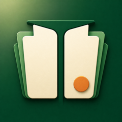

勘定科目ドリル サポート
運営：ガジェ⌘ガジェット伝道師(@gadget_man_n)
どんなアプリか
勘定科目を見て、借方・貸方を答える日商簿記3級向けの反復学習アプリです。通信なしで、すきま時間に練習できます。
ドリルの答え方
- 左へスワイプすると「借方」、右へスワイプすると「貸方」で回答します
- 下へスワイプすると保留。画面のボタンでも操作できます
- 正解した問題は間隔を空けて復習します。不正解や答えを見た問題は3枚後、保留は8枚後に出題します。残り枚数が少ない場合は末尾に戻ります
ドパモード（タイムアタック）
- 30秒・60秒で、増えた・減ったを借方・貸方へ振り分けるタイムアタックです
- 正解が続くとコンボで点数が伸び、音と光の演出が強くなります。演出は3種類から選べます
- 間違えた問題は、結果画面の「ドリルで復習」でドリルの今日の出題に戻せます
- 現金過不足と損益は、取引内容で答えが変わるためドパモードでは出題しません
よくある質問
記録はどこに保存されますか？
使っている端末のアプリ内に保存します。別の端末やWeb版との自動同期・引き継ぎはありません。「設定」で学習記録を初期化できます。
ドパモードの音が出ません
iPhoneがマナーモード（消音）のときは音が出ない仕様です。マナーモードを解除し、ドパモードのタイトル画面で音がオンになっているか確認してください。
アカウント登録や課金はありますか？
ありません。広告も表示しません。
教材について
日商簿記3級の基礎を学ぶ方向けに、勘定科目の意味と借方・貸方を練習する教材です。科目名等は日本商工会議所の公開資料を参照し、説明文とドリルは本アプリ用に作成しています。
対応範囲は2026年度向けです。2027年度の出題区分改定には未対応です。試験範囲全体の網羅や合格を保証するものではありません。受験する年度の公式情報と、問題文の指定を確認してください。
日本商工会議所・出版社の公式、公認アプリではありません。ドパモードの効果音は「効果音ラボ」の素材を使用しています。
お問い合わせ
不具合や教材の気になる箇所があれば、メールでご連絡ください。アプリのバージョン、iOSのバージョン、問題が起きた操作や科目名を添えてください。
パスワードや個人の会計情報は送らないでください。